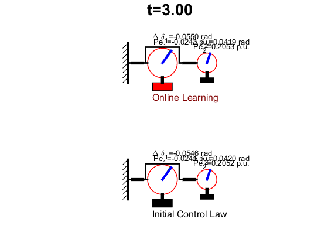
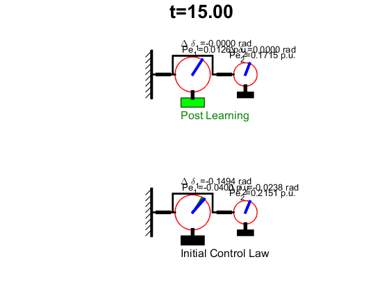
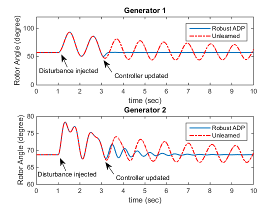
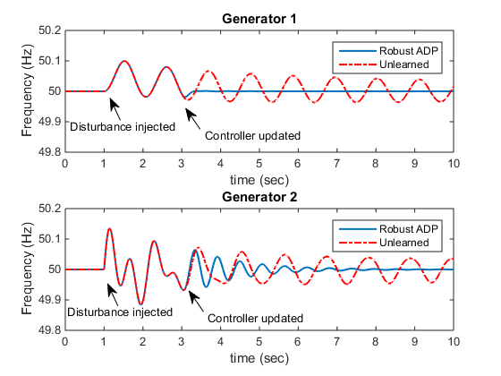

Contents
RADP for synchronous machines
Instantiate the parameter manager
pmgr = paramMgr.getInstance(); % Simulatin of 0<= t <= 1 when the system is on steady state. opt = odeset('OutputFcn',@createAnimation); [tt1,XX1] = ode45(@(t,x) syncMachine(t,x,pmgr), ... [0,1], ... zeros(24+6,1)', ... opt); % Adding perturbation at t = 1, simulate untill t = 2. [tt2,XX2] = ode45(@(t,x) syncMachine(t,x,pmgr), ... [1,2], ... 2*[0 0 .1 0 0 0.1 zeros(1,18) 0 0 .1 0 0 0.1]',opt); % Concatinate the simulatoin results on the first two intervals tt = [tt1;tt2]; XX = [XX1;XX2]; % Date matrices for learning Dxx=[]; Dzz=[]; Dxz=[]; Ixx=[]; Ixz=[]; Izz=[]; Izu=[]; Ixu=[]; Idx=[]; Idz=[]; Ixiu2=[]; Ixixi2=[]; Ixix2=[]; Dxixi2=[]; X = XX; % Collect data on 10 intervals for ct = 0:9 % Simulation [t,X] = ode45(@(t,x) syncMachine(t,x,pmgr), ... [0,pmgr.T] + 2 + ct*pmgr.T, X(end,:)', opt); % Parse output simulation data tt = [tt;t]; %#ok<AGROW> XX = [XX;X]; %#ok<AGROW> Dxx = [Dxx;kron(X(end,1:2),X(end,1:2))-kron(X(1,1:2),X(1,1:2))]; %#ok<AGROW> Dzz = [Dzz;X(end,3)^2-X(1,3)^2]; %#ok<AGROW> Dxz = [Dxz;X(end,1:2)*X(end,3)-X(1,1:2)*X(1,3)]; %#ok<AGROW> Ixx = [Ixx;X(end,7:10)-X(1,7:10)]; %#ok<AGROW> Ixu = [Ixu;X(end,11:12)-X(1,11:12)]; %#ok<AGROW> Ixz = [Ixz;X(end,13:14)-X(1,13:14)]; %#ok<AGROW> Izz = [Izz;X(end,15)-X(1,15)]; %#ok<AGROW> Izu = [Izu;X(end,16)-X(1,16)]; %#ok<AGROW> Idx = [Idx;X(end,17:18)-X(1,17:18)]; %#ok<AGROW> Idz = [Idz;X(end,19)-X(1,19)]; %#ok<AGROW> Ixiu2 = [Ixiu2;X(end,21)-X(1,21)]; %#ok<AGROW> Ixixi2 = [Ixixi2;X(end,22)-X(1,22)]; %#ok<AGROW> Ixix2 = [Ixix2;X(end,23:24)-X(1,23:24)]; %#ok<AGROW> Dxixi2 =[Dxixi2; X(end,20)^2-X(1,20)^2]; %#ok<AGROW> end % For Phase-One Learning D = 0.3*eye(2); Q = [5 0; 0 0.0001]; R = 1; K = [1 1]; Pold = -100*eye(2); P = zeros(2); Psave = []; it1 = 0; [K0,P0,E0] = lqr(pmgr.A1(1:2,1:2),pmgr.A1(1:2,3),Q,R); while norm(P-Pold)>1e-8 it1 = it1+1; Pold = P; theta = [Dxx(:,[1,2,4]) -2*Ixx*kron(eye(2),K')-2*(Ixz+Idx)]; Qk = Q + K'*R*K; Xi = -Ixx*Qk(:); PL = theta \ Xi; P = [PL(1) PL(2)/2; PL(2)/2 PL(3)]; L = PL(4:5)'; K = R \ L; end
For Phase-Two Learning
%K=K0;P=P0; B = pmgr.A1(1:2,3); H = 0; G = 1/pmgr.T1; F = -1/pmgr.T1; Dc = 0+ G\K*(P\K'); W = 0.1; V = 1.7438e-004; M = 10*K*(P\K'*R); Dxixi = Dzz + 2*Dxz*K'+ Dxx*kron(K',K'); Ixixi = Izz + 2*Ixz*K'+ Ixx*kron(K',K'); Ixxi = Ixz + Ixx*kron(eye(2),K'); Idxi = Idz + Idx*K'; Ixiuk = Izu + Ixu*K'; Sold = -100*eye(2); S = zeros(1); it2 = 0; Fc = F + pmgr.K0*B; [M0,S0,E2] = lqr(Fc,G,W,V); Ssave = []; Nsave = []; Msave = norm(M-M0); while norm(Sold-S)>1e-8 Sold=S; it2 = it2+1; phi = [Dxixi -2*Ixixi*M*V-2*Ixiuk*V -2*Ixxi -2*Idxi]; Wk = W + M'*V*M; psi = -Ixixi*Wk(:); SN = phi\psi; S = SN(1); M = SN(2); N = SN(3:4)'; L = SN(5); end pmgr.KM = [(M*V)\(N+K)+M*K M]; N0 = S0*(pmgr.K0*(pmgr.A1(1:2,1:2)-B*pmgr.K0)); KM0 = [(M0*V)\(N0+pmgr.K0)+M0*pmgr.K0 M0]; KM = [(M*V)\(N+K)+M*K M]; % Post learning simulation [t,X]=ode45(@(t,x) syncMachine(t,x,pmgr),[tt(end) 15],XX(end,:)', opt); XX = [XX;X]; tt = [tt;t];
Plot results
figure(2) subplot(211) plot(tt,(XX(:,1) + pmgr.angle10)*180/pi,tt,(XX(:,25) + pmgr.angle10)*180/pi,'r-.','Linewidth',1.5) legend('Robust ADP','Unlearned') xlabel('time (sec)') ylabel('Rotor Angle (degree)') axis([0 10 0 120]) title('Generator 1') subplot(212) plot(tt,(XX(:,4) + pmgr.angle20)*180/pi,tt,(XX(:,28) + pmgr.angle20)*180/pi,'r-.','Linewidth',1.5) legend('Robust ADP','Unlearned') xlabel('time (sec)') ylabel('Rotor Angle (degree)') axis([0 10 60 80]) title('Generator 2') % Create textarrow annotation(figure(2),'textarrow',[0.234811165845649 0.215106732348112],... [0.187763713080168 0.244725738396624],'String',{'Disturbance injected'}); annotation(figure(2),'textarrow',[0.399014778325123 0.371100164203612],... [0.657227848101265 0.71097046413502],'String',{'Controller updated'}); annotation(figure(2),'textarrow',[0.405582922824302 0.377668308702791],... [0.171995780590716 0.22573839662447],'String',{'Controller updated'}); annotation(figure(2),'textarrow',[0.239737274220033 0.220032840722496],... [0.681434599156118 0.738396624472574],'String',{'Disturbance injected'}); figure(3) subplot(211) plot(tt,XX(:,1)/2/pi+50,tt,XX(:,25)/2/pi+50,'r-.','Linewidth',1.5) legend('Robust ADP','Unlearned') xlabel('time (sec)') ylabel('Frequency (Hz)') axis([0 10 49.8 50.2]) title('Generator 1') subplot(212) plot(tt,XX(:,5)/2/pi+50,tt,XX(:,29)/2/pi+50,'r-.','Linewidth',1.5) legend('Robust ADP','Unlearned') xlabel('time (sec)') ylabel('Frequency (Hz)') axis([0 10 49.8 50.2]) title('Generator 2') % Create textarrow annotation(figure(3),'textarrow',[0.234811165845649 0.215106732348112],... [0.187763713080168 0.244725738396624],'String',{'Disturbance injected'}); annotation(figure(3),'textarrow',[0.399014778325123 0.371100164203612],... [0.657227848101265 0.71097046413502],'String',{'Controller updated'}); annotation(figure(3),'textarrow',[0.405582922824302 0.377668308702791],... [0.171995780590716 0.22573839662447],'String',{'Controller updated'}); annotation(figure(3),'textarrow',[0.239737274220033 0.220032840722496],... [0.681434599156118 0.738396624472574],'String',{'Disturbance injected'}); 